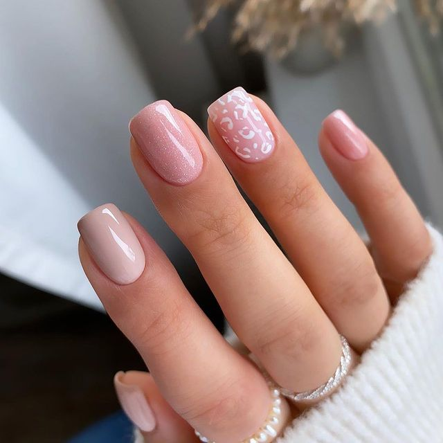
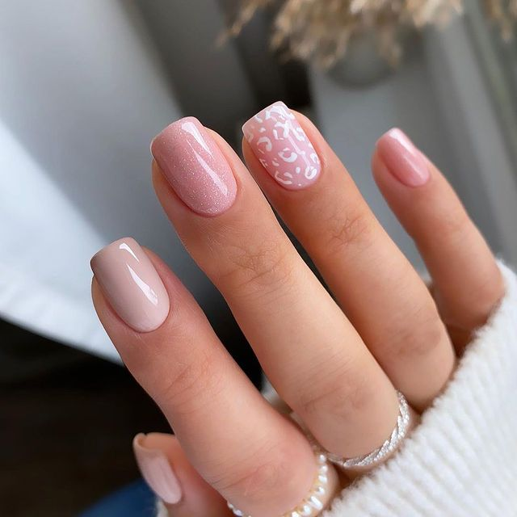
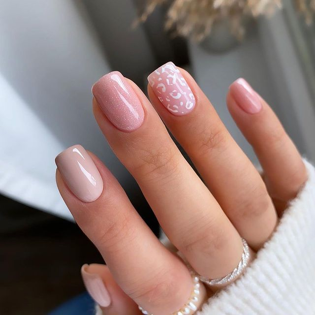

La manicura semipermanente es una técnica que mantiene las uñas pintadas perfectamente por un lapso bastante prolongado. El esmaltado semipermanente es la alternativa perfecta para aquellas mujeres que tienen una vida muy ocupada y que desean tener sus uñas impecables pero no cuentan con el tiempo necesario para asistir al manicurista con frecuencia.
